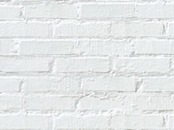

COLOR DE FONDO
COLOR DE TEXTO
COLOR DE ENLACES
COLOR DE ENLACES VISITADOS
COLOR DE ENLACES ACTIVOS
burlywood
darkred
yellow
gold
red
Imagen de botón ==> Abre página con imagen de fondo
Haz clic en la imagen de abajo
